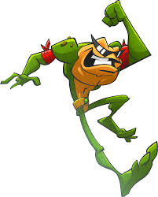
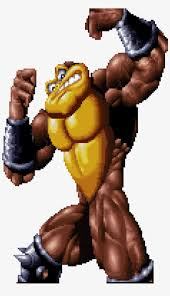
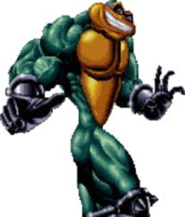
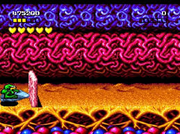
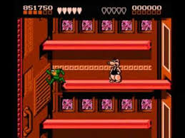
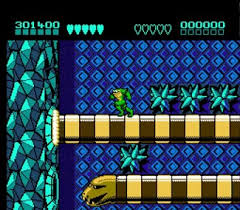

Battletoads
Battletoads é uma aclamada franquia de jogos de ação e pancadaria (beat 'em up) conhecida por seu alto nível de dificuldade e humor, que se originou no início dos anos 90 e teve um reboot em 2020.
A jogabilidade de Battletoads sempre se destacou pela sua variedade, combinando elementos de briga de rua clássica com fases de plataforma desafiadoras e minijogos, como a infame fase das motos voadoras. A dificuldade do jogo original de 1991 no NES é lendária, muitas vezes considerada extremamente desafiadora.
Personagens:
Rash:O sapo padrão com velocidade e força equilibradas. Seus movimentos são ideais para quem gosta de um combate direto.
Pimple: O maior e mais forte, mas também o mais lento do trio. Seus ataques são potentes, usando força bruta em combate.
Zitz: O menor e mais rápido, com menos força que os outros, mas capaz de desferir mais golpes por segundo e esquivas mais rápidas.
Tutorial:
Para zerar Battletoads, você precisa dominar o combate com os três personagens: Rash, Pimple e Zitz. Cada um tem suas Própias habilidades únicas. Rash é rápido e equilibrado, Pimple é o mais forte, e Zitz é o mais ágil. Domine os movimentos de cada um para superar os desafios do jogo.
1-Use os "warps" (atalhos) para avançar para fases mais adiante, mas saiba que você terá que dominar os novos desafios que virão.
2-Acumule vidas sempre que possível nas fases mais fáceis (como as de luta), pois você precisará delas para as fases de moto e outras mais difíceis.
3-Aperte o botão de ataque repetidamente para socos básicos e segure para transformações (pés gigantes, punhos gigantes, etc.) para causar mais dano ou atingir inimigos em diferentes alturas.
4-No modo cooperativo, coordene os ataques para derrubar inimigos maiores ou abrir caminho.
Turbo Tunnel:
Não há como "acelerar"; você precisa aprender a sequência exata de saltos, desvios e curvas. A prática é tudo aqui.
Rat Race:
No início da corrida de ratos, use o soco (que vira cabeçada) nos primeiros ratos para atrasá-los e garantir a primeira posição antes da bomba.
Snak Pit:
Memorize os pontos de ataque das cobras para desviar e acertar os inimigos.
Vídeo:

Este vídeo explica bem detalhado para pessoas que não tem noção do jogo